Your iPhone becomes a trackpad, an air pointer, or a deck of glass keys for your Mac. Which apps sit on that deck, what each gesture fires, and how far a finger may stray and still count as a tap are all set from the Mac. Padoo costs $9.99 and there is no subscription.
3-day free trial·Mac app free·iOS 18+ and macOS 15+
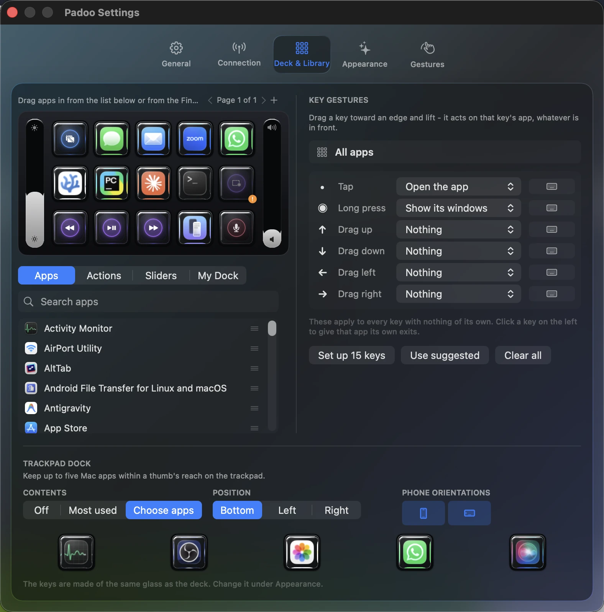
The deck editor in the Mac app. Every key on that grid was dragged there from the list underneath.
Pick from the radial menu.
The glass behaves like the trackpad you already know, at about two milliseconds from finger to cursor.
Point the phone at the screen and the cursor follows, like a remote.
A grid of glass keys carrying the apps' icons. Press one and that app comes forward.
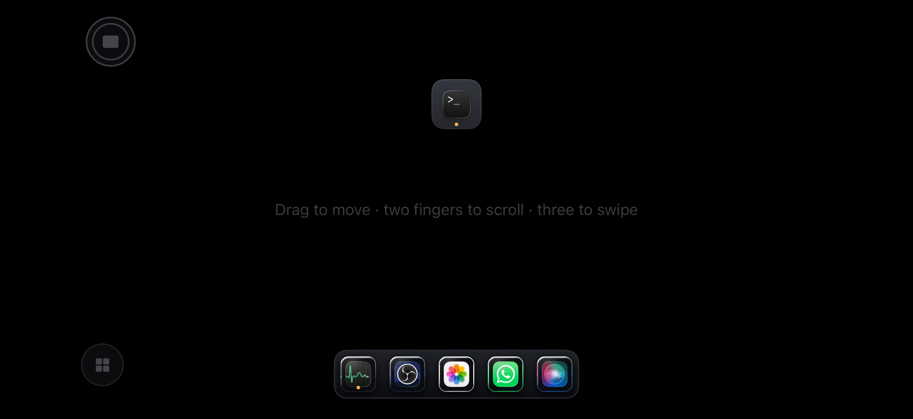
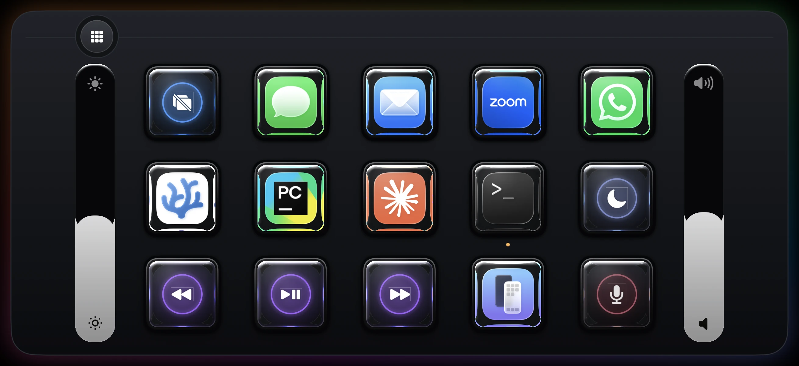
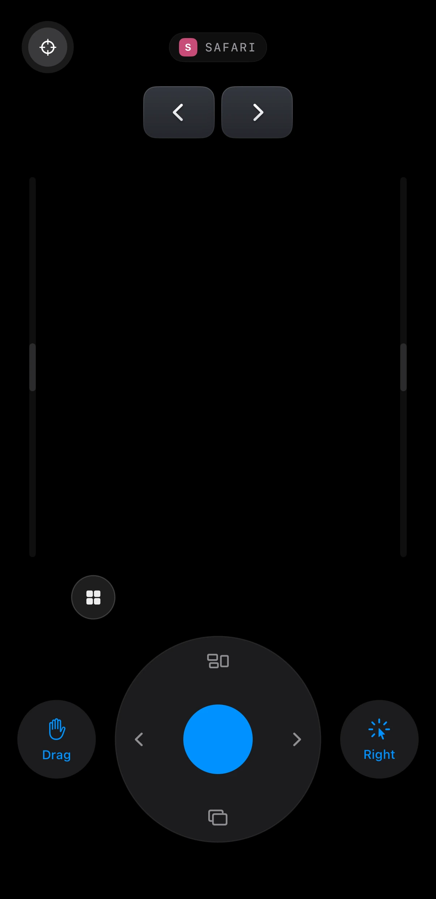
The Mac app holds all of it: which apps sit on the deck, what each gesture fires, the thresholds a gesture has to cross, and how the glass itself is drawn.
The list underneath is everything in your Applications folder. Drag one onto the grid and drop it where your thumb lands. A page holds fifteen keys, and you can add another page when you run out.
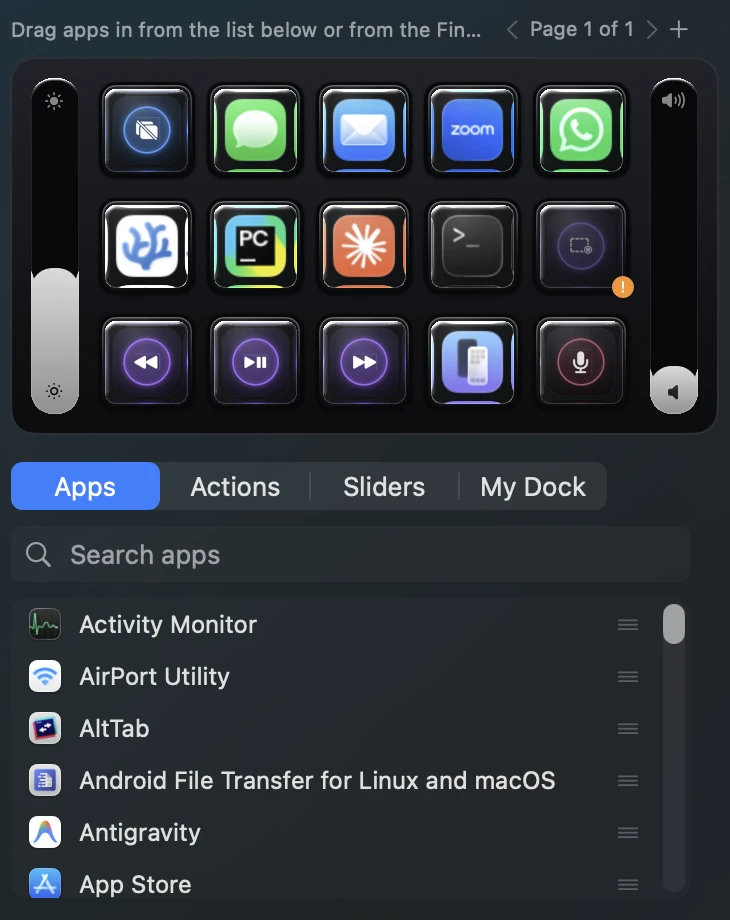
Tap a key, hold it, or flick it toward any of four edges. Those six gestures can each fire something different. Set one default that applies to every app, then override the apps that need their own.
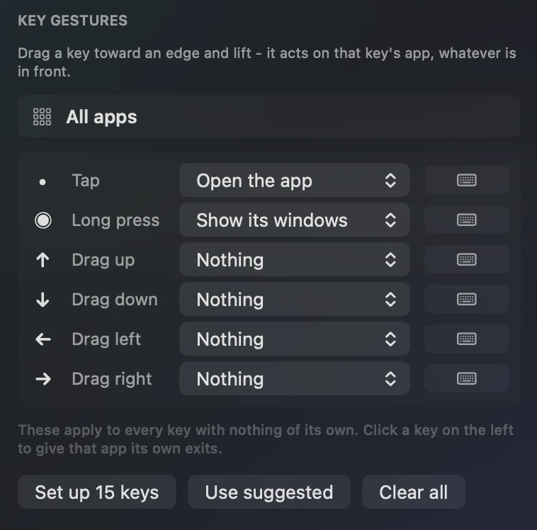
Each of those six gestures opens a menu. If none of the twenty-eight is what you meant, record a keystroke instead.
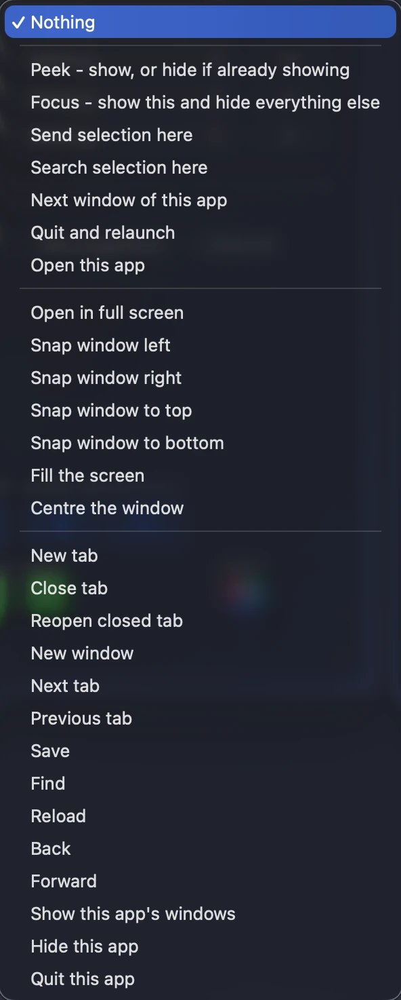
For example: Zoom does not need the same gestures as Finder. Padoo proposes a set for apps it recognises: pick Zoom and it offers mute on a flick up and camera on a flick down, which you take with one click or ignore. Directions you leave alone still fall through to the default, so binding one of them does not quietly clear the other three.
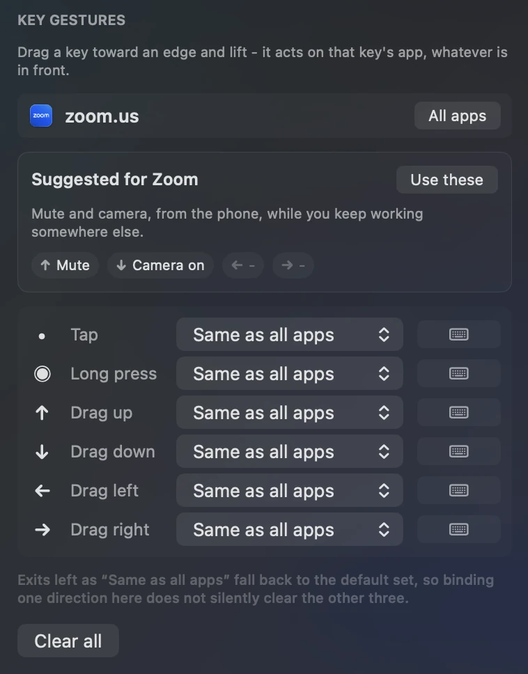
The tabs beside Apps hold actions and sliders instead of applications. Mute the microphone across every app at once, mute the Mac, open a camera preview to check yourself before a call, or start a screen recording.
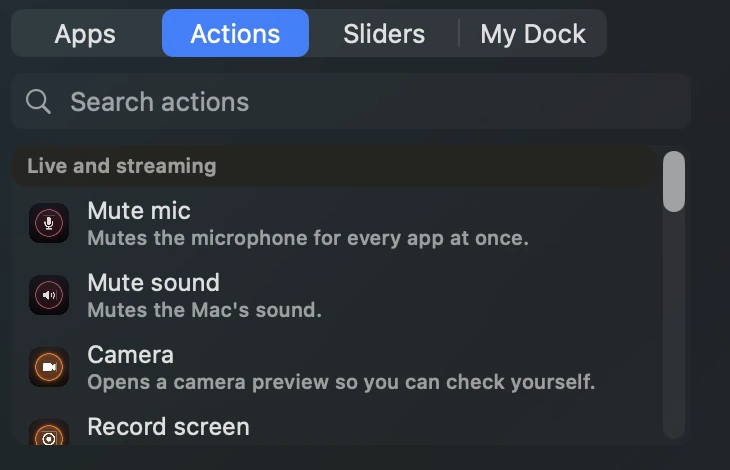
The trackpad can carry up to five Mac apps along one edge, so switching app does not mean leaving the surface. You choose the apps, the edge they sit on, and which orientations show them.
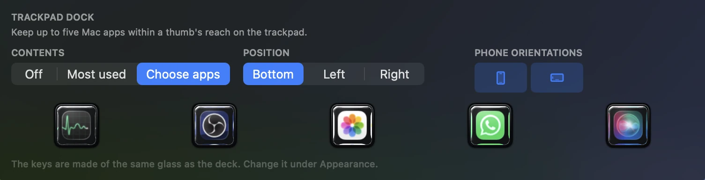
Slate, Sketch, Blush, Midnight, Majestic and Ember. The preview cards on the Mac are drawn by the phone's own renderer, so the card you click is what the glass will look like. Midnight is pure black, which on an OLED screen means those pixels are switched off.
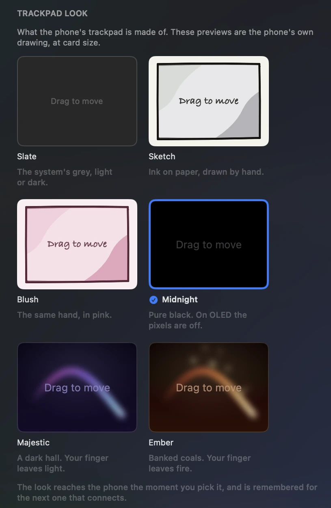
Refraction, colour split, highlight, edge width and edge light are computed per pixel on the phone. The preview on the Mac runs that same shader rather than a picture of it. Set every dial to zero and the keys cost the phone nothing to draw.
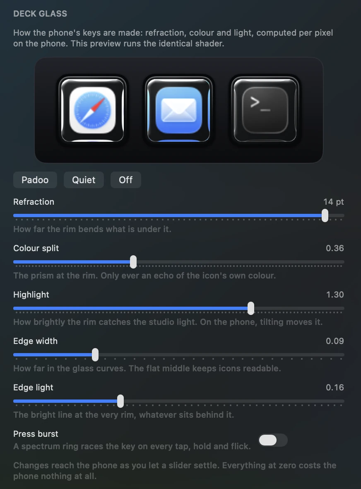
The sliders cover how far a finger may stray and still count as a tap, how long a hold waits before it turns into a drag, and how much of a swipe has to travel before it commits to a Space. Each one shows the shipped default beside your value, and one button restores them all.
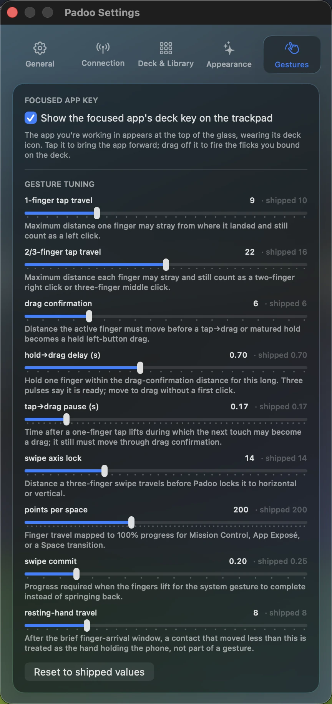
Three days free, then one purchase of $9.99 that covers every update after it. The Mac app is free and contains no purchase at all.
No account. No sign-in. No analytics. No servers, so there is no backend to send anything to. Your phone talks to your Mac and to nothing else. Pairing keys live in the keychain, and every session is authenticated.